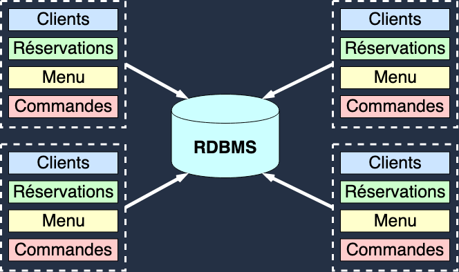
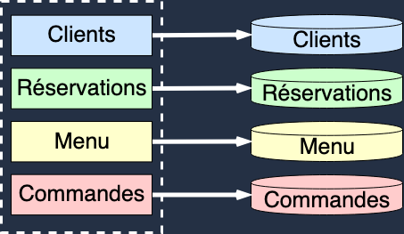
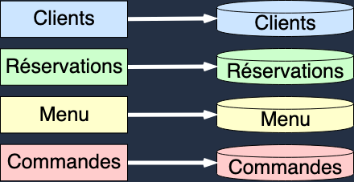
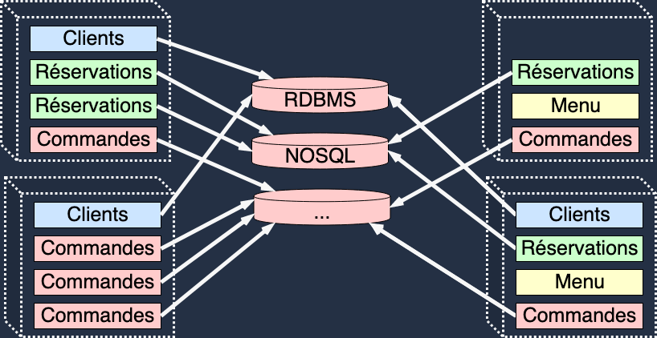
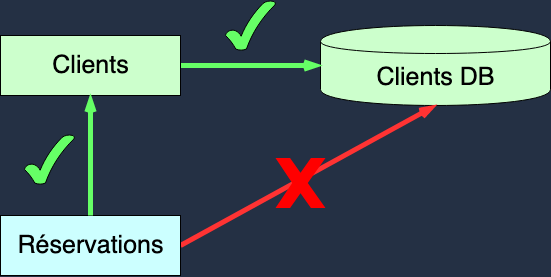
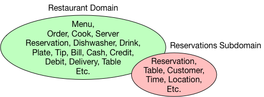

Microservices
Note:
- Première présentation en français
- Remercier Techno-Drink de m’accueillir aujourd’hui pour faire cette présentation
- Revenons au sujet principal
- Le terme Microservice est en vogue
- Qu’est-ce qu’un microservice?
- Le sujet est assez vaste, mais s’efforcer de couvrir les grands fondamentaux
- 2mn
Note:
- Rentrons dans le vif du sujet.
- Tout d’abord: ni complètement monolitique ou purement orienté microservice
- raisonner en terme de valeurs absolues
- prendre des décisions en fonction de principes plutôt qu’en fonction de ce qui est bon pour le produit.
- Chaque choix que vous faites vous permettra de vous déplacer dans ce spectre
- Garder juste en tête qu’il n’y a pas de solution parfaite. Tout est affaire de compromis, et de pragmatisme.
Monolithe: Caractérisques
- Couplage fort
- Déploiement unitaire (“Big Bang”)
- Manque d’orthogonalité (Syndrome de la pelote de laine)
- Cycle de développement longs
- Communication synchrone
- Conçu autour de ressources critiques partagées
- …
Note:
- Un monolithe est caractérisé principalement par le haut degré de couplage qui existe entre les composants qui le constitue.
- Il ne comporte pas forément tous ces aspects, mais ces derniers sont caractéristiques des monolithes.
- Ce degré de couplage peut avoir plusieurs conséquences:
- un mode de éploiment unitaire. qui nécessite le re-déploiement de l’ensemble des composants à chaque fois qu’un changement est introduit. (Composants ne peuvent être déployés indépendament les uns des autres).
- un manque d’orthogonalité: Helicoptere
- des cycles de développement longs.
- Distributed Monolith:
- Le partage de ressources critiques entre différents services
- L’impossibilité de déployer un service sans en déployer d’autres
- Incapacité de prévenir la propagation d’erreurs issues d’un service dane le reste du système dont il fait parti
- …
Scaling

Note:
- Comme dis plus tôt, les composants d’un monolith ne peuvent pas être déployé indépendament des autres.
- Par concéquent, scaler un monolithe revient à déployer plusieurs instances de ce dernier.
- Chaque instance est indépendante et ne communique pas avec les autres instances du monolithe.
- Afin de garder l’ensemble consistent, les ressources critiques sont partagées comme c’est le cas ici avec la base de données.
Avantages
- Simple à maintenir
- Simple à déployer
- Simple à exploiter
- Simple à “scaler”
Note:
- Ce type d’architecture comporte certains avantages:
- Si le code du monolith est contenu dans un même projet, les refactorings impliquant plusieurs modules sont plus simples
- Il est également plus simple de maintenir le systeme consistent si les instances partagent la même source de données (le résultat d’une écriture faite dans l’une des instances, sera tout de suite disponible pour les autres instances)
- Le déploiement peut être également plus simple (dans le cas d’une seule archive)
- Exploitation plus simple
- Plus facile à scaler
Inconvénients
- Limité à la capacité d’une machine
- Manque de flexibilité
- Propagation d’erreur
- Changement difficile à intégrer
Note:
- Components must be scaled as a group.
- Deep coupling leads to inflexibility.
- Cascading Failures
- Development is typically slow (change is difficult, build times long).
Microservices
Note:
- Passer du monolithe au microservice nécessite d’augmenter le niveau d’isolation entre les composants du système
Service Oriented Architecture (SOA)

Note:
- Une première étape est d’isoler l’état de chaque composant
- L’état de chaque composant est encapsulée (API)
- Services may live in the same process (monolith) or separate (microservices).
Microservices

Note:
- Les microservices introduise un degré d’isolement suppérieur
- Sous-Ensemble de l’approche SOA
- Chaque composant est isolé et peut être déployé indépendament et dispose de son propre schéma de donnée
- En cela, les microservices adoptent une approche auto-gérée
Scaling

Note:
- Each microservice is scaled independently.
- Could be one or more copies of a service per machine.
- Each machine hosts a subset of the entire system.
Organisation
- Nécessite des changements organisationnels.
- Les équipes sont plus indépendantes.
- Coordination moins nécessaire entre les équipes.
- Gains de productivité.
- Organisation plus “scalable”.
Avantages
- Chaque composant peut scaler à la demande et indépendament.
- Confinement des erreurs
- Couplage faible, architecture plus flexible
- Capable d’intégrer différents langages/technologies
- Cycle de déploiement court (possiblement continue)
Inconvénients
- Exploitation possiblement complexe (DevOps)
- Nécessite une strategé de migration d’API
- Peut fortement impacter l’organisation de l’entreprise (Conway’s law)
organizations design systems that mirror their own communication structure
Principes d’isolation
Note:
- As we move from Monoliths to Microservices we are introducing more isolation.
- Isolation provides reduced coupling and increased scalability.
- Reactive Microservices are isolated in:
- State
- Space
- Time
-
Failure
État

Note:
- All access to a Microservice’s state must go through its API.
- No backdoor access via the database.
-
Allows the microservice to evolve internally without affecting the outside.
Espace

Note:
- Microservices should not care where other microservices are deployed.
- It should be possible to move a microservice to another machine, possibly in a different data center without issue.
-
Allows the microservice to be scaled up/down to meet demand.
Temps

Note:
- Microservices should not wait for each other. Requests are asynchronous and non-blocking.
- More efficient use of resources. Resources can be freed immediately, rather than waiting for a request to finish.
- Between microservices we expect eventual consistency.
- Provides increased scalability. Total consistency requires central coordination which limits scalability (more on this later). —
Erreur

Note:
- Reactive Microservices also isolate failure.
- A failure in one Microservice should not cause another to fail.
- Allows the system to remain operational in spite of failure.
Implémentation
Note:
- Un système conçu à partir de microservices nécessite un découpage clair
- Chaque microservice doit donc avoir une responsabilité propre et une API clairement définie.
- Définir ce périmètre peut s’avérer difficile.
- Core problem: What is a microservice? We have to figure out what each service is, how big is it, what responsibilities does it have.
Single Responsibility Principle
A class should have only one reason to change.
Robert C. Martin
Domain Driven Design (DDD)
- Ensemble de techniques permettant de décomposer un problème complexe en un ensemble de sous-problèmes plus simples.
- Objectif: Créer une représentation du problème compréhensible à la fois par les experts métier et les dévelopeurs.
Note:
- Le DDD est un ensemble de techniques de briser un problème complexe en un ensemble de sous-problèmes plus simples
- Le but est de créer une reprèsentation du problème ou du plutôt du domaine métier compréhensible à la fois par les experts métier et les personnes chargées de leur fournir une solution.
Définitions
- Domaine: Un champ de connaissance
- Experts Métier: Toute personne impliqué dans le domaine
- Champ lexical (Ubiquitous Language): Language utilisé par les experts pour parler du domaine
Note:
- Dans le contexte du logiciel, definir le domaine revient a definir le metier que l’on cherche a representer.
- Les experts metiers sont les personnes a meme de parler du domaine. Prendre l’exemple du restaurant
- Le champs lexical est le language utilise par les experts pour parler du domaine entre eux.
Champ lexical
- La création du modèle nécessite une communication entre les experts et les développeurs
- Une terminologie doit donc être définie par les experts et utilisée lors de l’implémentation du modèle.
- Objectif: Permettre aux experts et aux développeurs d’avoir une conversation à propos du domaine sans utiliser des termes liés aux logiciel.
Note:
- Terminology in the Ubiquitous Language comes from the domain experts.
- Words originate in the domain and are used in the software.
- Avoid taking software terms and introducing them into the domain.
- Chaque sous-domaine comporte son propre champ lexical
- Au sein d’un sous-domaine, la définition d’un terme est toujours la même
- Problem space VS Solution Space
Bounded Context

- Bounded context: Espace tangible au sein duquel un terme comporte toujours la même définition.
Défi
- Culture DevOps
- Changements organisationels
- Acceptation des lois des systêmes distribués (Amdahl, Gunter, …)
Conclusion
Recap
- Monolith VS Microservices
- Principes d’isolation: État, Espace, Temps, Erreurs
-
Domain Driven Design: Champ lexical, bounded context
Pour aller plus loin
- Consistence éventuelle VS Consistence forte
- Communication synchrone VS asynchrone
- CQRS
Note:
- Allusion a l’example de la foret
- Loi de la physique (le temps qu’une information arrive, elle sera peut etre deja obsolete)
- La consistence forte
- Sync VS Async
- Transaction distribué -> Saga
- Applied Akka Patterns par Michael Nash et Wade Waldron
- Designing Data Intensive Application par Martin Kleppman
- Reactive Design Patterns par Roland Khun, Brian Hanafee et Jamie Allen
- Functional and Reactive Domain Modeling par Debasish Gosh
- vaughnvernon.com (DDD)
-
Lightbend Reactive Architecture (Cognitiveclass)
 Merci ! Questions ?
Merci ! Questions ?
francis.toth@yoppworks.com
Strong Consistency
An update to a piece of data needs agreement from all nodes before it becomes visible.
Eventual Consistency
Eventual consistency guarantees that, in the absence of new updates, all accesses to a specific piece of data will eventually return the most recent value.